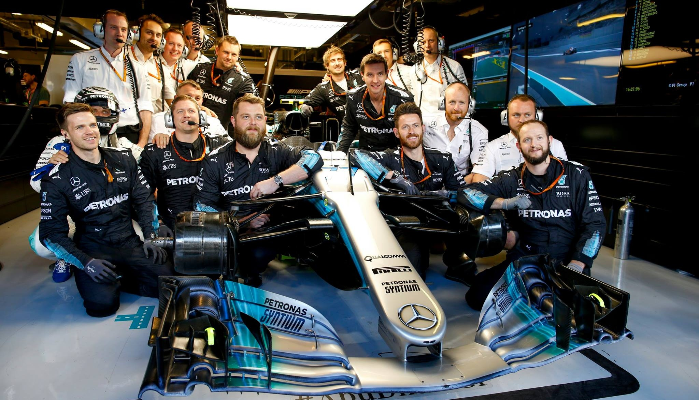

Explore o Universo da F1 em Uma Volta Só
Este blog é um mergulho nos detalhes da temporada atual da Fórmula 1. Entenda como funcionam os carros, quais circuitos desafiam os competidores e o papel crucial das equipes em cada corrida. Criado como parte de um projeto acadêmico, este espaço une informação, paixão e design para mostrar o que torna a F1 tão emocionante. Prepare-se para acelerar no conteúdo!
-

Sobre a F1
Tá começando agora ou quer relembrar como tudo funciona? Aqui você entende o que é a Fórmula 1, de onde veio e por que o mundo inteiro ama essas corridas.
-

Conheça as Equipes
McLaren, Mercedes, Red Bull... Mas será que você conhece todo o grid? Descubra quem tá na pista esse ano e escolha seu time pra torcer!
-

Explore os Circuitos
Do calor de Mônaco à chuva da Bélgica, conheça cada pista da temporada e veja onde os pilotos mostram quem manda no volante.
-
Entenda o Regulamento
Por que os carros mudam? O que é esse tal efeito solo? Vem entender as regras que definem o que pode (e o que não pode) na F1 de 2022 a 2025.

-

Entre em Contato
Curtiu o site, tem uma dúvida ou só quer trocar ideia sobre F1? Manda pra gente! Os boxes estão abertos.